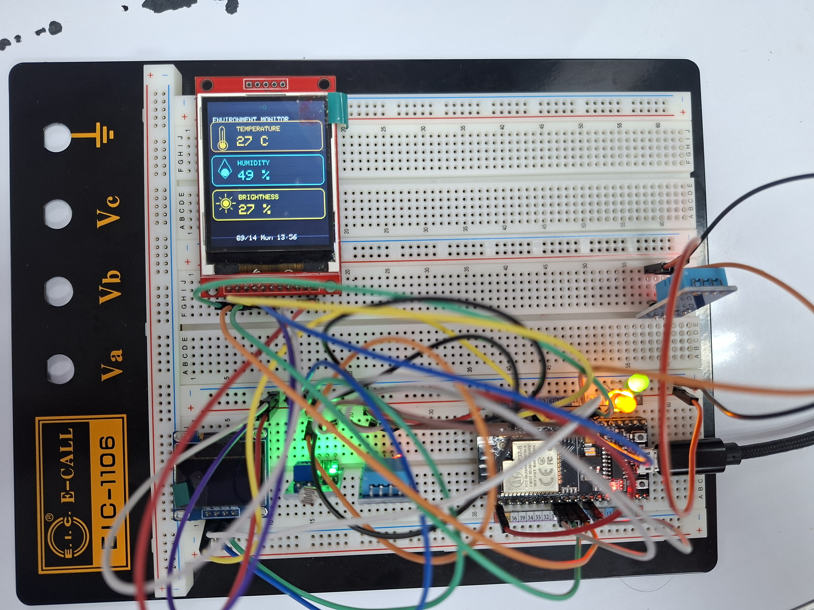
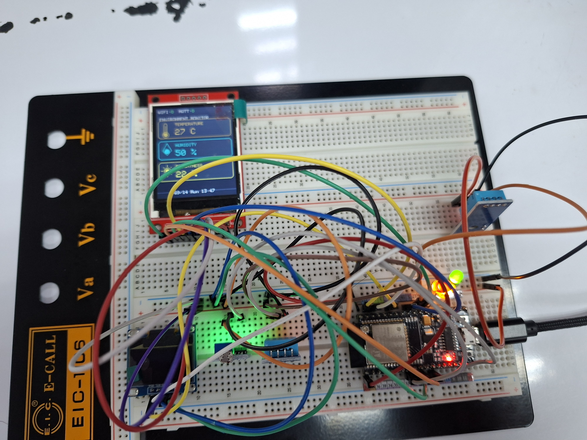
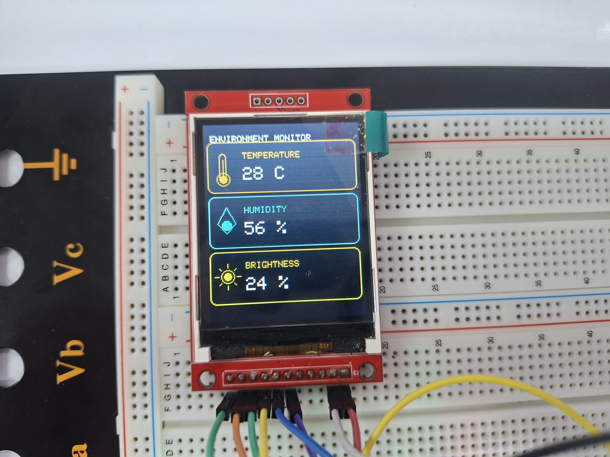
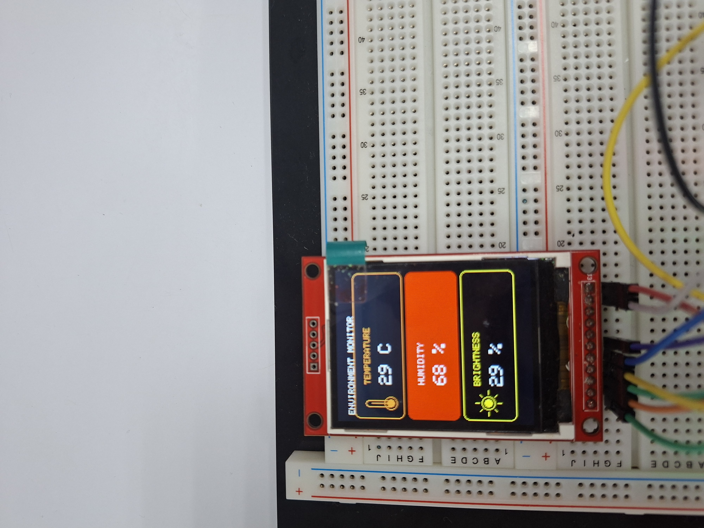
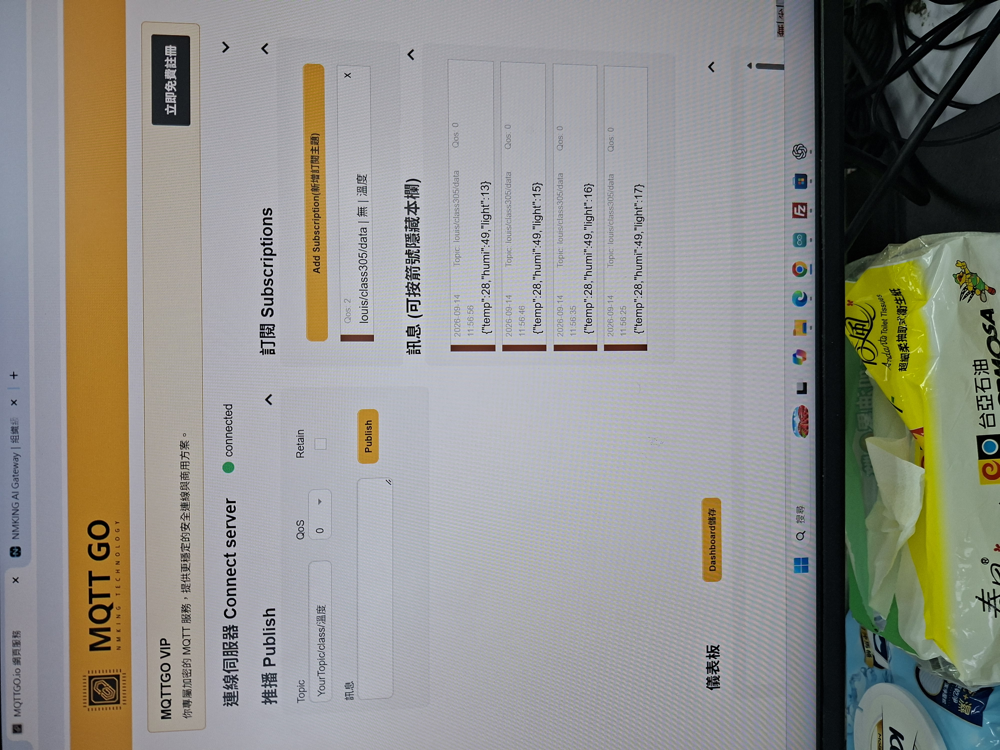
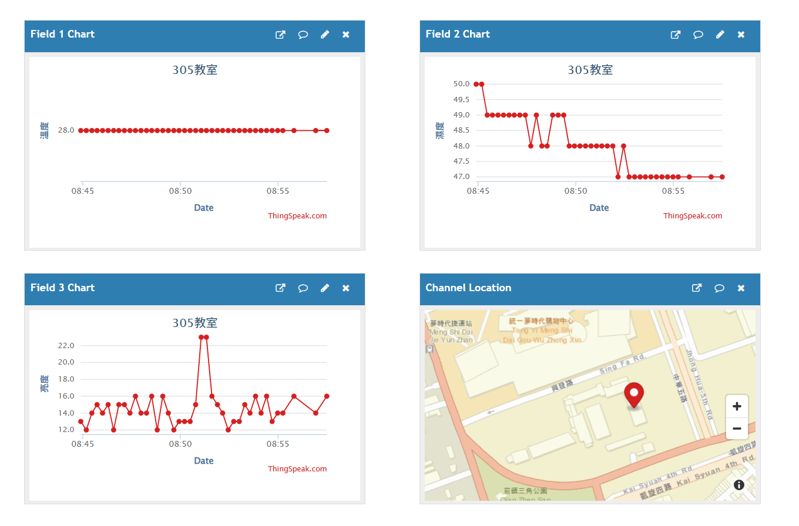
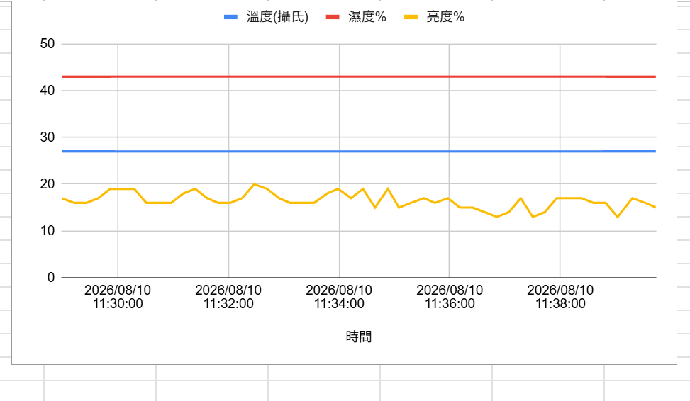

感測
DHT11 溫度／濕度
光敏電阻亮度
ESP32 × IoT learning project
從 DHT11 與光敏電阻出發，串起 TFT 儀表板、MQTT 雙向控制、雲端紀錄與異常通知，完成一套可以觀測、分析、互動的物聯網原型。

01 / SYSTEM
感測器讀取資料，ESP32 負責處理與連線；顯示、雲端、通知與輸出控制共享同一組環境數據。
DHT11 溫度／濕度
光敏電阻亮度
OLED 即時資訊
ILI9225 TFT 趨勢圖
Wi-Fi · NTP
MQTT Broker
ThingSpeak
Google Sheets · LINE
MQTT 三色 LED
GPIO0 換頁操作
02 / MQTT FLOW
ESP32 每 10 秒發布環境 JSON；收到控制主題後，callback 立即更新對應 LED。網路中斷時，系統會自動重新連線。
topic: louis/class305/data
{
"temp": 28,
"humi": 49,
"light": 16
}03 / FIELD NOTES
每張照片都是一次測試節點：硬體接線、現場顯示、雲端資料，以及最後的整合運作。






04 / TOOLBOX
build_final_report.py從零建立完整成果報告：架構、硬體、流程、測試與學習心得。
final_integrated_report.py將 MQTT、TFT、NTP 與歷史趨勢整合到既有 Word 報告。
merge_report_0914.py合併早期 OLED／雲端成果與 0914 最新整合版本。
rebuild_report_0914_integrated.py重建含系統架構、測試結果與照片說明的整合報告。
rotate_figures_12_14.py修正 Word 報告中指定成果照片的方向。
OPEN SOURCE LEARNING
從一顆感測器開始，逐步加入顯示、雲端、通知與控制。歡迎從 GitHub 了解完整學習歷程。